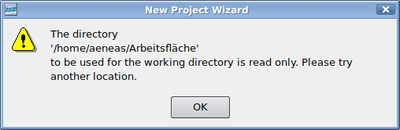

Xilinx ISE
Dieser Artikel wurde für die folgenden Ubuntu-Versionen getestet:
Dieser Artikel ist mit keiner aktuell unterstützten Ubuntu-Version getestet! Bitte diesen Artikel testen und das getestet-Tag entsprechend anpassen.
Zum Verständnis dieses Artikels sind folgende Seiten hilfreich:
Xilinx ISE (Design Suite) ist eine proprietäre Entwicklungsumgebung, welche die kostenfreie Edition WebPack enthält und von Xilinx hauptsächlich zum Design ihrer FPGAs und CPLDs entwickelt wurde. Möglich wird dies durch eine Hardwarebeschreibungssprache (HDL) wie Verilog oder VHDL, mit deren Hilfe man ähnlich einer Programmiersprache Operationen, Design und Verhalten von integrierten Schaltungen beschreiben kann.
Genauer befähigt Xilinx ISE den Entwickler ein Design zu synthethisieren, d.h. aus einer Verhaltensbeschreibung eine Netzliste (Verschaltung der Hardware) zu erzeugen. Dieser Vorgang ist durchaus vergleichbar mit dem Vorgang der Kompilierung und ähnlich rechenaufwändig. Darüber hinaus bietet Xilinx ISE Möglichkeiten an, mit denen das Designs analysiert, mit verschiedenen Stimuli simuliert, als RTL (Register Transfer Level) Diagramm angezeigt oder auch direkt auf ein Gerät (z.B. FPGA) übertragen werden kann.
Installation¶
Hinweis:
Im Wesentlichen bezieht sich folgende Installationsanweisung auf die Version 13.2, kann aber größtenteils auch ab den 12er Versionen angewendet werden. Bei älteren Versionen gestaltet sich die Installation teilweise deutlich anders! Entsprechend müssen bei anderen Versionen die Programmpfade angepasst werden. Ebenso wenn man ISE nicht in dem vorgeschlagenen Pfad installiert.
Xilinx ISE herunterladen und Installation starten¶
Zunächst lädt man sich von der Projektseite 
 die Xilinx ISE Design Suite herunter. Achtung: Diese ist mit einer Größe von mehreren Gigabyte nicht gerade klein. Nach dem Download entpackt man diese [3], öffnet ein Terminal [1], wechselt in das entpackte Verzeichnis und startet das Setup-Skript mit Rootrechten:
die Xilinx ISE Design Suite herunter. Achtung: Diese ist mit einer Größe von mehreren Gigabyte nicht gerade klein. Nach dem Download entpackt man diese [3], öffnet ein Terminal [1], wechselt in das entpackte Verzeichnis und startet das Setup-Skript mit Rootrechten:
sudo ./xsetup
Anfangs kann man auswählen, welche Edition man installieren will. Verfügt man nicht über eine Lizenz, empfiehlt es sich das kostenfreie ISE WebPack auszuwählen. Danach hat man je nach Version verschiedene Optionen zur Auswahl:
| Installationsoptionen | |
| Option | Empfehlung |
| "Acquire or Manage a License Key" | Sollte man deaktivieren, da beim ersten Aufruf von ISE sowieso auf eine Lizenz geprüft wird, bzw. man kann aus ISE den Lizenzmanager starten. Anderenfalls wird der Ordner ~/.Xilinx mit Rootrechten erzeugt, was beim Ändern der Lizenz zu Problemen führen kann. Siehe dazu folgendes Problem Eine neue Lizenz im Lizenzmanager bewirkt keine Änderung |
| "Enable WebTalk ..." | WebTalk sendet Nutzungsdaten der Software und der einzelnen Tools an den Hersteller Xilinx, um ISE verbessern zu können. Dabei werden laut eigener Aussagen keine Daten gesendet, mit Hilfe derer man das entwickelte Design erschließen könnte. Benutzer von ISE WebPack können diese Option nicht deaktiveren. Alle anderen sollten sich genauestens über dieses "Feature" informieren und selbst entscheiden. |
| "Ensure Linux System Generator Symlinks" | Der Beschreibung nach verbessert es die Kommunikation zwischen ISE und Matlab. Daher kann es aktiviert bleiben (Standardeinstellung). |
| "Install Cable Drivers" | Sollte man deaktivieren, da es nichts bringt, außer einer Fehlermeldung am Ende der Installation, die man aber getrost ignorieren kann. Zur Installation eines Kabeltreibers siehe Installation des Kabeltreibers. |
Achtung!
Das Installationsverzeichnis darf auf keinen Fall eines der folgenden Zeichen enthalten: :, *, ?, ", ], [, |, <, >, $, %, ä, ö, ü, ß oder ein Leerzeichen. Darüber hinaus sollten, um etwaigen Problemen aus den Weg zu gehen, andere Sonderzeichen vermieden werden.
Danach folgt die Angabe des Installationspfades, welchen man am besten voreingestellt auf /opt/Xilinx/13.2 lässt (siehe dazu Artikel opt). Bei Bedarf können Einstellungen einer vorherigen Installation importieren werden. Die Installation kann auf Grund der Datenmenge recht viel Zeit in Anspruch nehmen.
Start¶
Nach der Installation muss man mit source die Umgebungsvariable $XILINX setzen. Erst danach kann man ISE per ise starten [4]:
32 Bit System
source /opt/Xilinx/13.2/ISE_DS/settings32.sh ise
64 Bit System
source /opt/Xilinx/13.2/ISE_DS/settings64.sh ise
Problembehebung¶
PDF Dokumente werden nicht aufgerufen¶
Da ISE standardmäßig in /usr/bin/acroread nach einem Programm zum Anzeigen von PDF Dokumenten sucht, kann man dieses Problem mit Hilfe eines symbolischen Links [5] lösen. Für den Fall, dass Evince installiert sein sollte, reicht der folgende Befehl:
sudo ln -s /usr/bin/evince /usr/bin/acroread
Anderenfalls muss der Befehl entsprechend angepasst werden.
Webseiten werden nicht aufgerufen¶
Sollten Webseiten aus ISE (z.B. über "Help -> WebTalk_Help") nicht aufrufbar sein und in der Konsole folgende Fehler auftreten,
/usr/lib/firefox-5.0/firefox-bin: /opt/Xilinx/13.2/ISE_DS/ISE/lib/lin64/libstdc++.so.6: version `GLIBCXX_3.4.14' not found (required by /usr/lib/firefox-5.0/libxul.so) /usr/lib/firefox-5.0/firefox-bin: /opt/Xilinx/13.2/ISE_DS/ISE/lib/lin64/libstdc++.so.6: version `GLIBCXX_3.4.9' not found (required by /usr/lib/firefox-5.0/libxul.so)
so reicht es die mitgeführten libstdc++6 Bibliotheken aus ISE zu verschieben, sodass ISE auf die systeminternen Bibliotheken zugreifen kann. Der Einfachheit halber meldet man sich in einer Root-Shell an, da sämtliche Befehle Rootrechte benötigen.
32 Bit System
sudo su cd /opt/Xilinx/13.2/ISE_DS/ISE/lib/lin mkdir orig && mv libstdc++* orig cd /opt/Xilinx/13.2/ISE_DS/common/lib/lin/ mkdir orig && mv libstdc++* orig exit
64 Bit System
sudo su cd /opt/Xilinx/13.2/ISE_DS/ISE/lib/lin64 mkdir orig && mv libstdc++* orig cd /opt/Xilinx/13.2/ISE_DS/common/lib/lin64/ mkdir orig && mv libstdc++* orig exit
Sollte libstdc++6 nicht installiert sein, muss die Bibliothek noch installiert werden [7]:
libstdc++6
 mit apturl
mit apturl
Paketliste zum Kopieren:
sudo apt-get install libstdc++6
sudo aptitude install libstdc++6
Problem bei setzen der Umgebungsvariable¶
Wenn der Aufruf der Konfigurationsdatei fehlschlägt (Meldung: "file not found" beim Programmstart), könnte das Problem an fehlenden Privilegien und Rechten liegen. Umgehen kann man das Problem, indem man einen Parameter (den Installationspfad) setzt. Danach kann man wie gewohnt ISE starten.
source /opt/Xilinx/13.2/ISE_DS/settings64.sh /opt/Xilinx/13.2/ISE_DS ise

Fehlende Rechte¶
Tritt die Fehlermeldung "The directory ... is read only" auf, so hat man entweder im Verzeichnis keine Schreibrechte und muss sie entsprechend anpassen [6]. Oder es tritt wie im Beispiel ein Sonderzeichen (hier ä) im Pfad auf, d.h. man muss entweder einen anderen Pfad wählen oder einen symbolischen Link [5] auf das entsprechende Verzeichnis setzen.
Eine neue Lizenz im Lizenzmanager bewirkt keine Änderung¶
Falls man über den Lizenzmanager versucht eine neue Lizenz per "Copy License" einzufügen und nach einer Erfolgsmeldung keine Änderung wahrnimmt, sollte man die Rechte des Ordners ~/.Xilinx auf den aktuellen Benutzer setzen [6]:
chown -R user:user /home/user/.Xilinx
ChipScope Pro¶
Wenn ihr euch bei Xilinx für eine 30 Tage Evaluierungslizenz angemeldet habt, könnt ihr auch mal mit dem ChipScope Pro spielen. Um die "analyzer" und "inserter" tools zu benutzen muss für die Shell Scripte von "dash" auf "bash" umgeschaltet werden.
sudo dpkg-reconfigure dash
Im Fenster dann einfach "no" auswählen.
Sysgen 14.7¶
Wird Xilinx IDE zusammen mit Matlab verwendet (Sysgen) kommt beim Start folgender Fehler:
/opt/Xilinx/14.7/ISE_DS/ISE/sysgen/util/sysgen: 82: /opt/Xilinx/14.7/ISE_DS/ISE/sysgen/util/sysgen: Syntax error: "(" unexpectedGrund ist, dass im sysgen-Skript in der ersten Zeile "#! /bin/sh" steht. Unter Ubuntu verweist /bin/sh standardmäßig auf /bin/dash. Ändert man "#! /bin/sh" in "#! /bin/bash" startet zwar Matlab, jedoch gibt es dann bei der Synthese weitere Fehler, sodass diese nicht erfolgreich ist. Daher muss der Link geändert werden:
sudo rm /bin/sh sudo ln -s /bin/bash /bin/sh
Alternativ (wie im vorherigen beschrieben):
sudo dpkg-reconfigure dash
Im Fenster dann einfach "no" auswählen.
Installation des Kabeltreibers¶
Vorbereitung¶
Folgende Packete müssen installiert werden [7]:
git
build-essential
libusb-dev
fxload
mit apturl
Paketliste zum Kopieren:
sudo apt-get install git build-essential libusb-dev fxload
sudo aptitude install git build-essential libusb-dev fxload
USB Treiber herunterladen und kompilieren¶
Nachdem man alle benötigten Packete installiert hat, meldet man sich der Einfachheit halber in einer Root-Shell an, da alle nachfolgenden Befehle Rootrechte benötigen:
sudo su
Danach lädt man den Treiber herunter und kompiliert [8] ihn:
cd /opt/Xilinx git clone git://git.zerfleddert.de/usb-driver cd usb-driver/ make
Firmware laden¶
Ob die Firmware bereits geladen wurde, sieht man an der Ausgabe von
lsusb
Ist die Firmware bereits geladen, endet die Device ID auf 8,
Bus 001 Device 006: ID 03fd:0008 Xilinx, Inc.
ansonsten endet die Device ID auf d
Bus 001 Device 006: ID 03fd:000d Xilinx, Inc.
Um die Firmware zu laden führt man das Skript setup_pcusb mit Rootrechten aus und startet danach udev neu:
Experten-Info:
Ist die Umgebungsvariable $XILINX bereits geladen, braucht der Aufruf von setup_pcusb keinen Parameter.
./setup_pcusb /opt/Xilinx/13.2/ISE_DS/ISE /etc/init.d/udev restart
Anschließend kann man die Root-Shell wieder verlassen:
exit
Ob der Treiber erfolgreich geladen wurde, kann man über lsusb (s.o.) oder auch über eine eventuell vorhandene LED auf dem angeschlossenen FPGA Board feststellen. Verwendet man z.B. das Xilinx Spartan 3E Board , leuchtet die LED neben dem USB Anschluss auf, sobald die Firmware geladen wurde. Wenn der USB Kabeltreiber nach obiger Anleitung nicht funktioniert, sollte man einen Blick in die README (Zeile 77) im aktuellen Ordner werfen, da in dieser eine alternative Vorgehensweise erklärt wird. Die README kann auch separat heruntergeladen werden: README .
Digilent Plugin¶
Das Digilent Plugin und Adept für Xilinx Impact kann man hier herunterladen und nach Anleitung (Readme) installieren. Führt das Plugin beim Klick auf "Cable Setup" zum Absturz von Impact, so könnte vielleicht dieser Thread  helfen.
helfen.
Benutzung und alternative Programme¶
Um einen groben Einblick in die Benutzung von ISE zu bekommen, lohnt es sich auf der Herstellerseite Informationen einzuholen. Speziell ist das Quick Start Tutorial für die Version 10 empfehlenswert, welches größtenteils auch auf nachfolgende Versionen anwendbar ist.
Besonders empfehlenswert ist folgende Anleitung, welche die Möglichkeiten der Simulation mit verschiedenen Programmen, darunter Quartus II von Altera , die freien Programme Icarus Verilog und GTKWave , als auch die Integration letzerer in Eclipse beschreibt: Verilog Tutorials . Eine weitere empfehlenswerte Seite ist fpga4fun , welche zahlreiche Informationen zu FPGA Projekten liefert.
Hinweis:
Freie Software kann in Form von Icarus Verilog und GTKWave, sowie einer Vielzahl anderer Programme, einen großen Teil der Entwicklung (Code schreiben, Simulation, etc.) abdecken (oftmals auch besser), aber meistens keine Synthese für ein bestimmtes FPGA durchführen.
- Erstellt mit Inyoka
-
 2004 – 2017 ubuntuusers.de • Einige Rechte vorbehalten
2004 – 2017 ubuntuusers.de • Einige Rechte vorbehalten
Lizenz • Kontakt • Datenschutz • Impressum • Serverstatus -
Serverhousing gespendet von